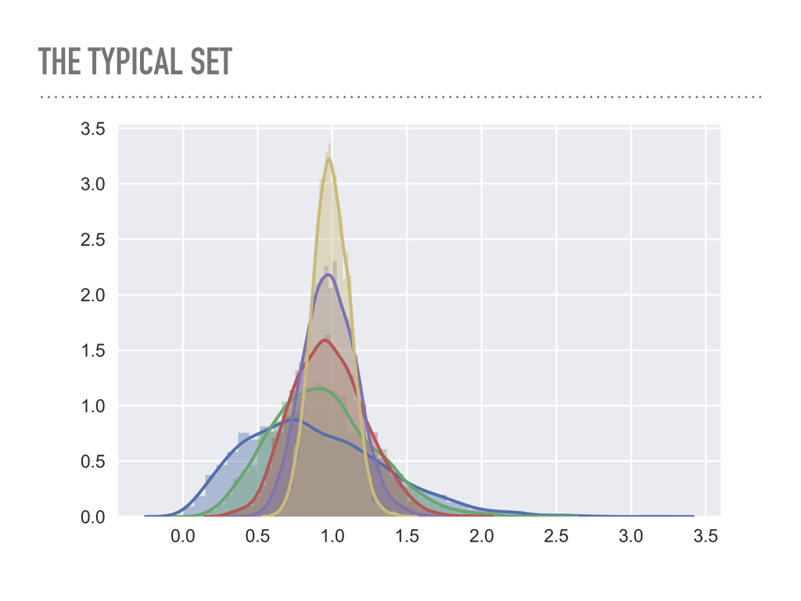

18.3. Visualizations of MCMC#
Chi Feng visualizations#
There are excellent javascript visualizations of MCMC sampling available on the web. A particularly effective set of interactive demos was created by Chi Feng, which are included in this section. These demos range from random walk Metropolis-Hastings (MH) to Adaptive MH to Hamiltonian Monte Carlo (HMC) to No-U-Turn Sampler (NUTS) to Metropolis-adjusted Langevin Algorithm (MALA) to Hessian-informed HMC (H2MC), to Stein Variational Gradient Descent (SVGD) to Nested Sampling with RadFriends (RadFriends-NS). We’ll start with the random walk MH, which is the algorithm discussed in Section 18.2.
Exploring the Metropolis-Hastings (MH) simulation#
Controls for the MCMC simulations
If you uncheck the Autoplay box, you can use the Step button to see the algorithm carried out one step at a time.
Use the Reset button to clear the sampled points.
Select Open Controls when you want to make a change to one of the settings.
Note the various Simulation options (and other options) when the controls are open. For now, switch the Target distribution to standard. This distribution is a two-dimensional Gaussian (just the product of two one-dimensional Gaussians).
After making changes, use Close Controls to avoid obscuring the simulation.
When looking at the visualizations, remember the basic structure of the MH algorithm:
Make a random proposal for new parameter values.
Accept or reject the proposal based on a Metropolis criterion.
Checkpoint question
Is the standard distribution correlated? How do you know from the simulation?
Answer
The distribution is uncorrelated. The accumulated joint posterior has horizontally oriented ellipses (circles if the scales are equal). They would be slanted if there were correlations.
Here are some comments and observations on the basic MH simulation:
An uncolored arrow indicates a proposal, which is accepted (green) or rejected (red).
Checkpoint question
What happens when a proposal is rejected? You can see the result by unchecking the
Autoplaybox and using theStepbutton. Look at the histogram as you press the button to get either a green or red arrow.Answer
With a rejection, the point should be added to the existing set of samples. This means that if the arrow is green (accepted proposal), then the histogram bin at the new point should go up by one. If the arrow is red (rejected proposal), then the histogram bin at the old point should go up by one (this is easy to see if you first
Resetso there are not many points yet.)Notice that the direction and the length of the proposal arrow varies and are, in fact, chosen randomly from a distribution. The direction is sampled uniformly.
The MH MCMC seems to do ok on sampling such a simple distribution, as indicated by how well the projected posteriors get filled in.
But it is diffusing, i.e., a random walk, which is not so efficient. A more complicated shape can cause problems:
MH can spend a lot of time exploring over and over again the same regions;
if not specially tuned, many proposals can be rejected (red arrows).
Try the
donuttarget distribution, which is much trickier.Notice that the projected one-dimensional posteriors don’t seem to be so complex, but this is a difficult topology.
Is this shape realistic? When there are many parameters (a high-dimensional space), this is analogous to a common target distribution. The probability mass concentrates in this shape.
Note on donuts in high dimensions

Look at the average radius of points sampled from multivariate Gaussians as a function of the dimension.
blue is one dimensional, green is two dimensional, … , yellow is six dimensional.
Imagine yellow as a 6-dimensional shell \(\Lra\) the analog is a two-dimensional donut.
{kind=link}
Problem: we are constantly looking for the right step size, which is big enough to explore the space, but small enough to not get rejected too often.
High dimensions is a big space! It is hard to stay in a region of high probability while also exploring enough of the full space (in a reasonable time).
Try adjusting the proposal \(\sigma\) (there is a Gaussian proposal with variance \(\sigma^2\)) \(\Lra\) try this on donut: to get a reasonable rate of green arrows you need excellent step size tuning.
Challenges in MCMC sampling#
Use the pulldown menu to try the different target distributions available. The banana distribution is generally difficult to sample while
the multimodal distribution is in general very tough to sample effectively.
Checkpoint question
What makes the various distributions difficult to sample effectively?
Hint
We see several general classes of problematic PDFs:
Correlated distributions that are very narrow in certain directions.
Donut or banana shapes.
Multimodal distributions.
What is the difficulty with each of these?
Answer
Correlated distributions: scaled parameters are needed.
Donut or banana shapes: very low acceptance ratios.
Multimodal distributions: might easily get stuck in local region of high probability and completely miss other regions.